core/src/scheduler.cpp, lines 18 to 36: run_algorithm picks FCFS or SJF, simulate_single_core validates, trims and computes metrics.Operating Systems, Final Project
SchedLab is a CPU scheduling simulator. You enter some processes, pick FCFS or SJF (both non-preemptive, one core), press Run, and it draws a Gantt chart and a results table: start, completion, waiting, turnaround and response time per process, plus the averages and the makespan. Time is in "ticks", which are just simulation steps, not milliseconds.
We wrote the scheduling logic once, in C++20 (core/). Compiled normally, it gives a console program (schedlab-cli) and the unit tests. Compiled with Emscripten, it becomes WebAssembly that runs in the browser. The React page only collects input and draws results; it never schedules anything itself. It calls the core through a small TypeScript interface, SchedulerAdapter.
web/src)schedlab.mjs, built from wasm_bindings.cppcore/src)One implementation means one thing to get right. A test (web/tests/parity.test.ts) feeds the same inputs to the browser build and the console build and fails if the outputs differ at all.
Every run goes through one function (). It validates the input, asks the algorithm only when each process runs (a list of segments like "P1 from 0 to 8"), and then metrics.cpp computes every number from those segments. So FCFS and SJF share the same formulas.
core/src/scheduler.cpp, lines 18 to 36: run_algorithm picks FCFS or SJF, simulate_single_core validates, trims and computes metrics.You need Node.js, CMake 3.20+ and a C++20 compiler. From the project folder, in PowerShell:
cmake -S core -B build/core cmake --build build/core --config Release Set-Location web npm ci npm run dev # open the local URL that Vite prints # console program (after the cmake build above) build\core\Release\schedlab-cli.exe <fcfs|sjf> < input.txt
After installing, it works offline.
| Field | Meaning | Accepted |
|---|---|---|
| PID | Name on the chart | Not empty, unique, not IDLE |
| Arrival | Tick it becomes ready | Whole number, 0 to 1,000,000 |
| Burst | Ticks of CPU needed | Whole number, 1 to 1,000,000 |
| Priority | Shown in results | Whole number, -1000 to 1000 |
Priority is in the brief, so we accept it, but FCFS and SJF ignore it. A test (priority_does_not_change_the_order) checks that.
A run takes 1 to 100 processes. Empty, negative or decimal values are rejected with a message on the exact field; we never silently turn them into 0. The editor catches format and range problems first, and the C++ core rechecks everything, including whole-table rules like duplicate IDs and 64-bit overflow. It reports all errors at once.
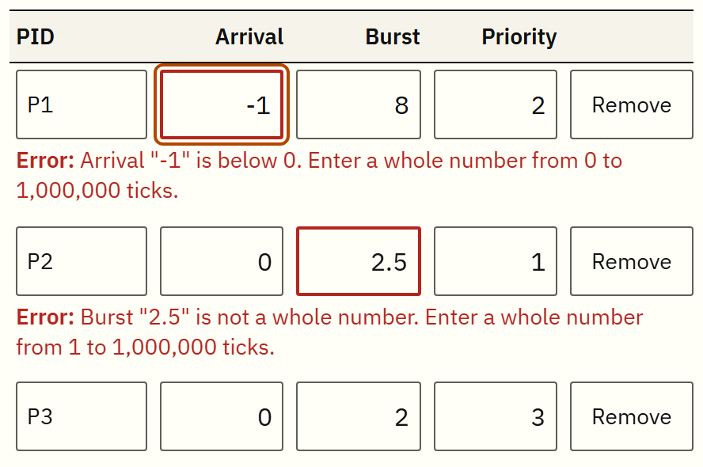
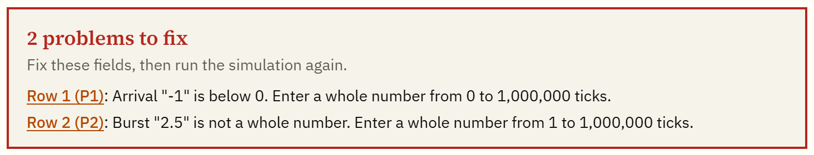

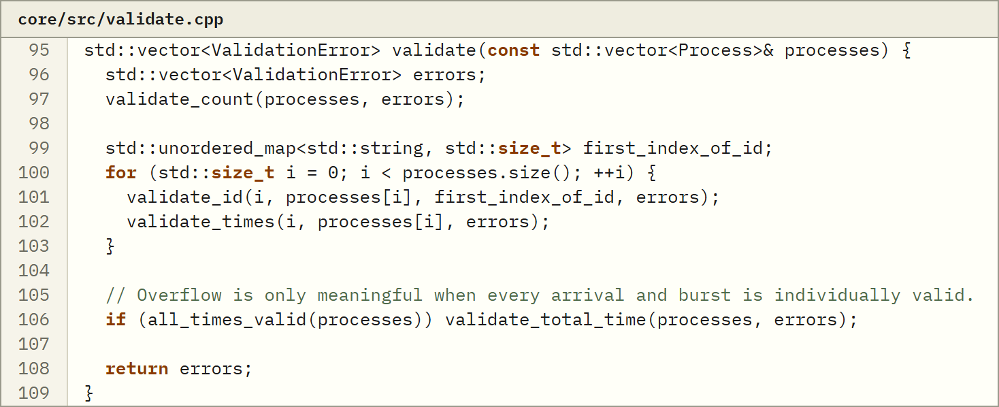
core/src/validate.cpp, lines 95 to 109: validate collects every error before returning.Idea. A queue. First to arrive runs first, to completion. Same arrival? The one listed first wins. If the next process has not arrived, the CPU idles.
Code. indices_by_arrival () sorts by arrival with std::stable_sort. A stable sort keeps the original order on ties, so the tie-break comes for free. fcfs_segments () then walks that list with a clock now: if process.arrival > now, record idle and jump ahead; then record the run and add the burst.
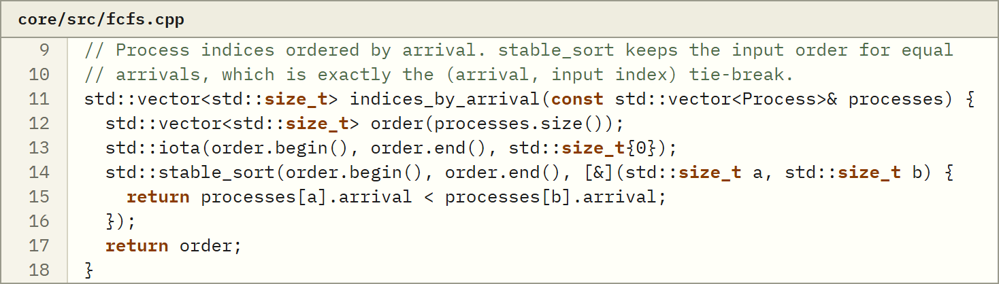
core/src/fcfs.cpp, lines 9 to 18: indices_by_arrival orders by arrival and keeps input order for ties.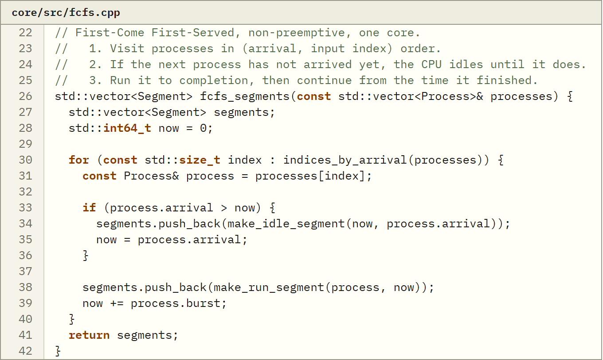
core/src/fcfs.cpp, lines 22 to 42: fcfs_segments, the FCFS algorithm.Trace: T1. P1 (burst 8), P2 (burst 4), P3 (burst 2), all arriving at 0. Order stays P1, P2, P3.
| Pass | now before | Next | arrival > now? | Segment | now after |
|---|---|---|---|---|---|
| 1 | 0 | P1 (0, 8) | no | P1 [0, 8) | 8 |
| 2 | 8 | P2 (0, 4) | no | P2 [8, 12) | 12 |
| 3 | 12 | P3 (0, 2) | no | P3 [12, 14) | 14 |
[8, 12) means ticks 8 to 11, done at 12. Waiting is 0, 8, 12, so the average is 20 / 3 = 6.67 ticks. Turnaround is 8, 12, 14, average 34 / 3 = 11.33. Same as the app in .
Idle. P1 (0, 1) and P2 (4, 2): after P1 the clock is 1, but P2 arrives at 4, so we record idle [1, 4), then P2 runs [4, 6) with 0 waiting ().
Idea. Whenever the CPU is free, pick the shortest burst among processes that have arrived. Ties go to earlier arrival, then to the row listed first. The pick runs to completion; a shorter job arriving mid-run has to wait.
Code. SJF can't be one sort up front, because who is available depends on the time. sjf_segments () loops once per process: pick_shortest_job finds the best arrived process at now; if none, the clock jumps to earliest_unfinished_arrival with an idle segment. is_shorter_job compares burst, then arrival. The last tie-break is a small trick: the scan goes top to bottom and only switches on a strictly better process, so on a full tie the earlier row stays (). That's O(n2); a heap would be faster, but for 100 processes the simple version is plenty and easier to read.

core/src/sjf.cpp, lines 10 to 38: is_shorter_job, pick_shortest_job and earliest_unfinished_arrival.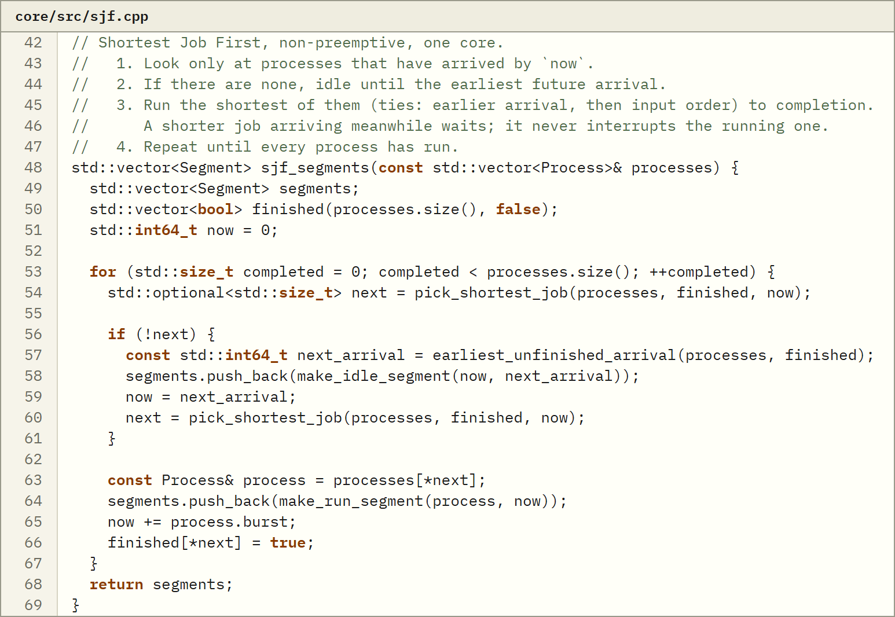
core/src/sjf.cpp, lines 42 to 69: sjf_segments, the SJF algorithm.Trace: T2. Built to show non-preemption: P1 (arrival 0, burst 8), P2 (1, 4), P3 (2, 2).
| Pass | now | Arrived, unfinished | Chosen | Segment | now after |
|---|---|---|---|---|---|
| 1 | 0 | P1 | P1 | P1 [0, 8) | 8 |
| 2 | 8 | P2 (4), P3 (2) | P3 | P3 [8, 10) | 10 |
| 3 | 10 | P2 | P2 | P2 [10, 14) | 14 |
At tick 0 only P1 exists, so it runs, and P3 can't cut in when it shows up at tick 2. At tick 8 SJF picks P3 over P2. Waiting is 0, 9, 6: average 15 / 3 = 5.00 ticks, turnaround 29 / 3 = 9.67 (). FCFS on the same input gives 5.67 and 10.33 ().
Everything comes from the segments: start and completion are where a segment begins and ends, then waiting = start - arrival, turnaround = completion - arrival, response = waiting. Averages are sums over n, and makespan is the largest completion. record_start_and_completion and derive_waiting_turnaround_response do the per-process part (); compute_schedule_metrics does the totals ().
One detail: we don't just sum into a double. Huge inputs could overflow or lose precision, so we add integer quotients and remainders of each value over n and convert once at the end. For small inputs it's the same as normal division. The app shows 2 decimals, the CLI 4.
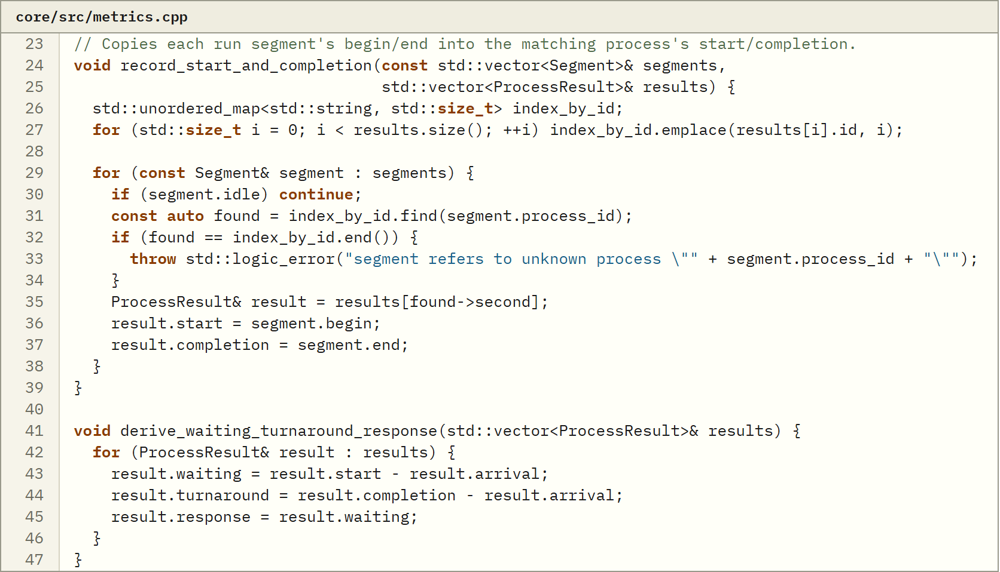
core/src/metrics.cpp, lines 23 to 47: record_start_and_completion and derive_waiting_turnaround_response.
core/src/metrics.cpp, lines 68 to 93: compute_schedule_metrics returns results, averages and makespan.| PID | Arrival | Burst | Start | Completion | Waiting | Turnaround |
|---|---|---|---|---|---|---|
| P1 | 0 | 8 | 0 | 8 | 0 | 8 |
| P2 | 1 | 4 | 10 | 14 | 9 | 13 |
| P3 | 2 | 2 | 8 | 10 | 6 | 8 |
| Sum | 15 | 29 |
Screenshots of the running app: chart first, then results. The "Figure 1" and "Table 1" labels inside them are the app's own. sums it all up.
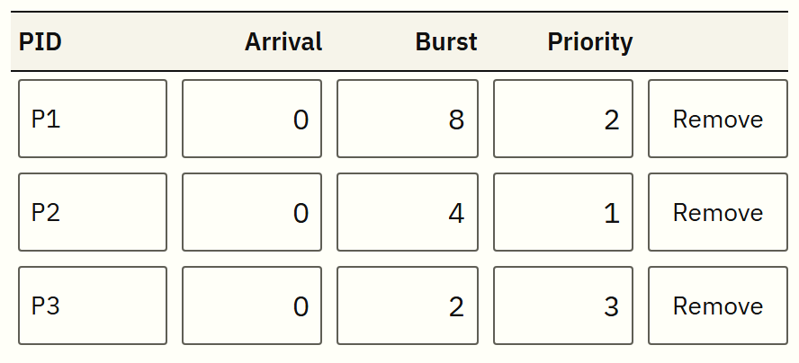


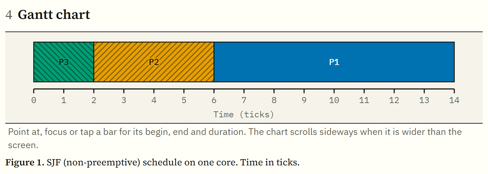

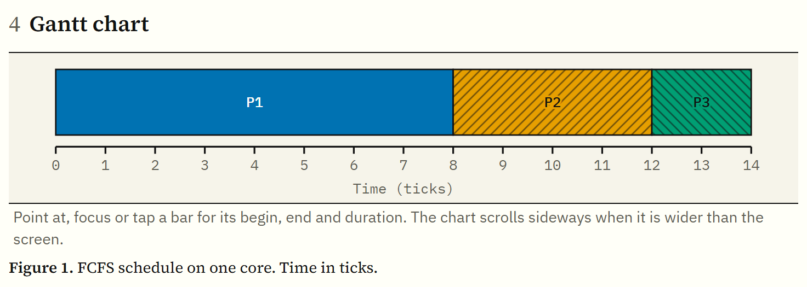
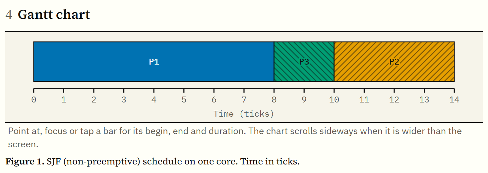
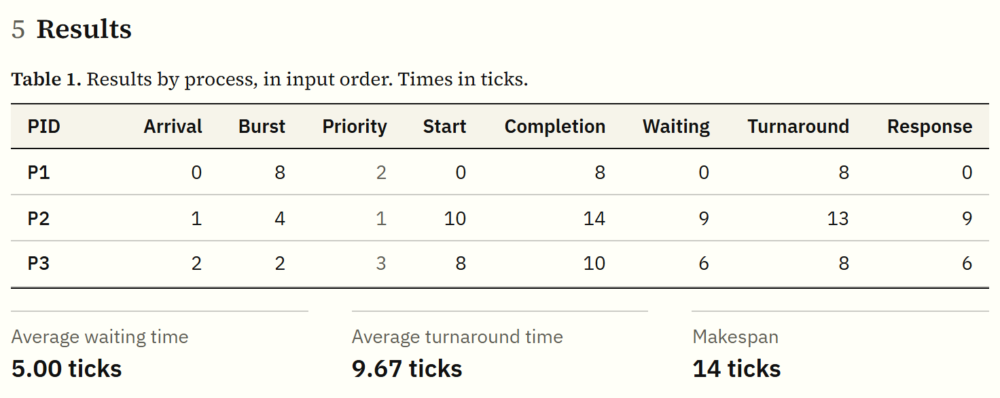
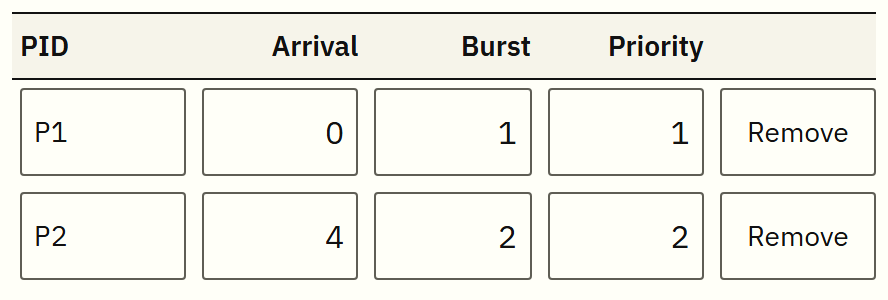

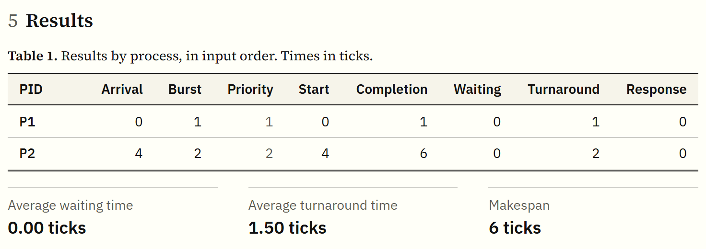
schedlab-cli reads lines of id arrival burst priority and prints segments, results, averages and makespan. Same numbers as the app (), since it's the same code.

build\core\Release\schedlab-cli.exe.| Workload | Algorithm | Order | Avg waiting | Avg turnaround | Makespan |
|---|---|---|---|---|---|
| T1: P1 (0, 8), P2 (0, 4), P3 (0, 2) | FCFS | P1, P2, P3 | 6.67 | 11.33 | 14 |
| SJF | P3, P2, P1 | 2.67 | 7.33 | 14 | |
| T2: P1 (0, 8), P2 (1, 4), P3 (2, 2) | FCFS | P1, P2, P3 | 5.67 | 10.33 | 14 |
| SJF | P1, P3, P2 | 5.00 | 9.67 | 14 | |
| Idle: P1 (0, 1), P2 (4, 2) | Both | P1, idle, P2 | 0.00 | 1.50 | 6 |
We didn't want to trust "looks right on screen", so there are automated tests at every level. Run on 14 November 2026, Windows 11:
| What | Command | Result |
|---|---|---|
| C++ core | ctest --test-dir build/core -C Release | 15 of 15 passed |
| Windows tool (optional) | ctest --test-dir build/intel -C Release | 9 of 9 passed |
| Web unit + browser-vs-console | npm test | 772 passed |
| Type check | npm run typecheck | no errors |
| Clicking through the real app | npm run test:e2e | 22 passed (Chromium) |
The core tests check T1 and T2 against our hand-computed values, plus the edge cases: idle gaps, ties, one process, unsorted input, every validation rule. Random-workload tests check things that must always hold (no overlapping segments, every process runs once, no negative waiting). Browser tests cover phone and desktop widths, bad input, and loading with the network blocked. Not tested: Firefox, Safari, real phones, screen readers.
Optional, for learning only. Not part of the graded simulator, which stays the default, and they don't change FCFS or SJF.
Newer CPUs mix fast and power-saving cores (Intel P- and E-cores, Arm big.LITTLE), so we added a mode that swaps the single core for an Intel-style layout (6 P + 4 E, ten lanes) or an Arm-style one (1 + 3 + 4, eight lanes). FCFS or SJF still picks the next process; a second rule picks the core. A job takes ceil(work / core speed) ticks. Results are labelled SIMULATED and Experimental / simplified model.
T1 under FCFS with default placement ends at tick 8 with energy 14. Fastest-core placement () puts everything on P-cores: makespan 4, energy 21. Faster, but costs more.
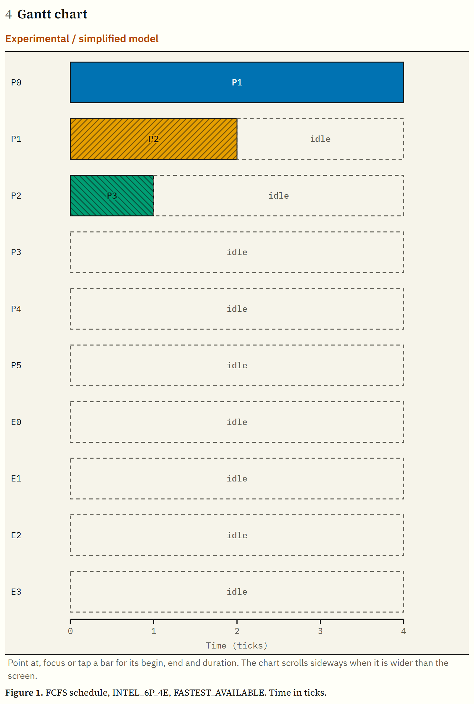
Since the numbers above are invented, we also measured. schedlab-intel.exe (native/windows-intel) is a small Windows C++ tool. It asks Windows for the core types, then runs fixed work on one thread while asking Windows (via CPU Sets) to keep it on the fastest or most power-saving cores. It saves timings as JSON, which the app shows in a separate Native measured panel, in real milliseconds, never mixed into the tick chart.
Run on 14 November 2026, i7-12650H laptop, Balanced power plan: one warm-up, then three runs of 400,000,000 iterations. Every run gave checksum 51001733377, so the work was identical.
| Requested | Run 1 | Run 2 | Run 3 | Median | On requested type (of 382 checks) |
|---|---|---|---|---|---|
| performance | 678.4595 | 668.6926 | 689.6459 | 678.4595 | 382, 382, 382 |
| efficient | 838.2289 | 795.0416 | 828.3228 | 828.3228 | 365, 310, 365 |
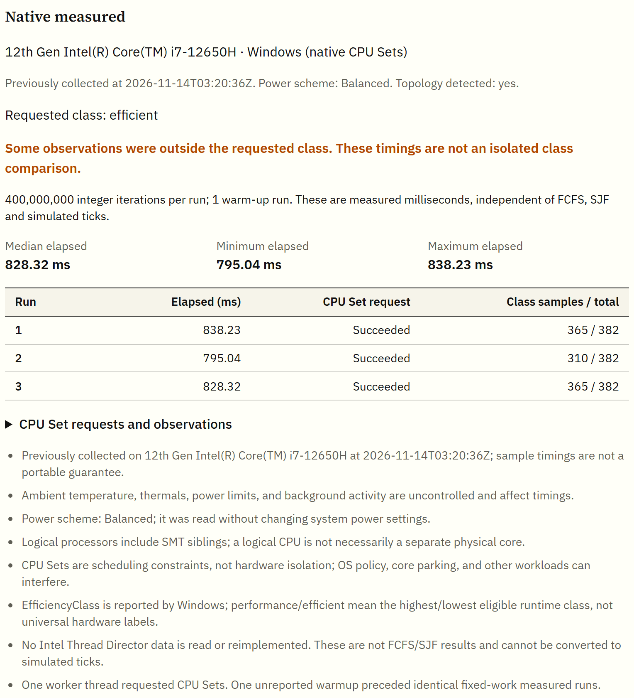
Medians: 678.46 ms (performance), 828.32 ms (efficient). The performance request held every time; the efficient one didn't (365, 310, 365 of 382), so we can't claim an exact P vs E speed ratio, and we don't. CPU Sets are a request, not a guarantee, and we didn't control background apps, heat or power. One workload, one laptop, three runs.
1. Among the scheduling algorithms you implemented (FCFS, SJF), which one performed the best in terms of average waiting time and turnaround time? Explain why.
SJF won on both, in both test cases. In T1 everything arrives at tick 0, so only the order changes. FCFS runs P1, P2, P3 and gets 6.67 ticks average waiting and 11.33 turnaround. SJF runs P3, P2, P1 and gets 2.67 and 7.33.
It comes down to who waits for whom. Whatever runs first is waited on by everyone behind it. FCFS puts the 8-tick P1 up front, so P2 and P3 sit through it and wait 8 and 12. SJF puts P1 last, so nobody waits on it. Total work is the same; both end at tick 14.
In T2 the gap is smaller (5.67 vs 5.00 waiting, 10.33 vs 9.67 turnaround) because P1 was alone at tick 0 and can't be interrupted. SJF also isn't better for everyone: P2 waits 9 under SJF and 7 under FCFS. And our simulator knows every burst in advance, which a real OS doesn't.
2. How does the arrival time of processes affect the fairness and efficiency of each scheduling algorithm? Provide an example based on your test cases.
Arrival time decides who is actually ready when the CPU frees up. FCFS only looks at arrival, which feels fair since nobody gets overtaken, but a short job that shows up late still waits behind long ones. In T2, P3 arrives at tick 2 needing just 2 ticks and waits 10, the longest wait in that run.
SJF depends on arrival even more. At tick 0 only P1 was there, so SJF had no choice, and since it can't preempt, P1 held the CPU until tick 8. Then it picked P3 over P2: P3's wait dropped from 10 to 6, but P2's rose from 7 to 9. SJF's lead in average waiting shrank from 4.00 ticks in T1 to 0.67 in T2, just because arrivals were spread out.
Arrival also decides idle time. With P1 (0, 1) and P2 (4, 2), the CPU idles during [1, 4) under both, and both give 0.00 waiting and 1.50 turnaround. With only one choice, the algorithm doesn't matter.
3. Which algorithm was the most challenging to implement and why? What concept or logic made it difficult?
SJF. FCFS is basically one stable sort plus one loop with a clock. SJF can't be a single sort because the set of choices changes as time moves, so the code has to pick, run, move the clock and pick again, and three details have to be right together.
First, idle time: if nothing has arrived, the clock has to jump to the next arrival and record an idle segment, or the loop has nothing to pick. Second, tie-breaking: same burst goes to the earlier arrival, then the row listed first, which we get by scanning in order and only switching on a strictly better process. Third, non-preemption: the scheduler must not re-pick when a shorter job arrives mid-run, and T2 exists to check exactly that.
Outside the algorithms, the hardest part was making the browser and console builds match exactly. JavaScript numbers are doubles, so we had to cap the integer range and compute averages carefully.
4. If you were to improve your simulator, what additional features or enhancements would you add to make it more useful or realistic for OS learning?
First, the algorithms the project didn't require: shortest remaining time first (preemptive SJF), round robin with an adjustable quantum, and priority scheduling, which would finally use the priority field we store but ignore. T2 shows why: SJF can't let P3 run at tick 2, a preemptive version could, and seeing both on one chart would show what preemption gains and costs.
Second, step-by-step playback and a side-by-side comparison. Right now you switch algorithms and compare two screens yourself. Watching the queue change tick by tick would make the convoy effect obvious.
Third, more realism. Real processes alternate CPU and I/O bursts, and switching processes costs time, so I/O bursts and a context-switch cost would change which algorithm wins. A random workload generator, CSV export, and metrics like CPU utilization and throughput would help with bigger experiments.
5. How does simulating CPU scheduling help you understand real-world operating system behavior? Give at least two insights you gained from this project.
First, the convoy effect. In T1 under FCFS, P3 needs 2 ticks but waits 12 behind P1 and P2. Just reordering cut average waiting from 6.67 to 2.67 ticks, while total work and the 14-tick makespan stayed the same. A scheduler doesn't make the machine faster; it changes who waits and how long.
Second, every algorithm has a catch. SJF has the best averages, but it needs burst times up front, which a real OS doesn't have. T2 also shows that without preemption a short job can still get stuck behind a long one.
Third, from the Windows experiment: textbooks assume identical cores. A real Intel laptop has different core types, and even when we asked Windows to keep a thread on efficient cores, it stayed there for only 365, 310 and 365 of 382 checks. Real scheduling also depends on core types, power settings and other programs, which our simulator leaves out on purpose.
plan.md, docs/core-contract.md, docs/web-contract.md, docs/hybrid-contract.md, docs/hardware-assumptions.md.